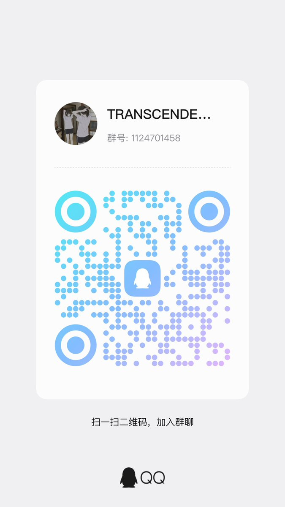

雫丶Shizuku✨DUCEXY
@LanziiLove
入群申请可以多写一些，更容易通过，也可以写上自己的推号

雫丶Shizuku✨DUCEXY
@LanziiLove
因为有很多推友私信问我很多很多HRT和SRS相关的问题，所以想着可以建一个交流群在里面回答这些内容
这个群主要用来聊天、交流和互助，hrt、rle和srs这些相关的东西，也可以用来同类交友。
然后mtf、ftm、非二元等只要是性别认同相关的少数群体都可以加，谢绝顺性别，发现了会踢出。
qq：1124701458 https://t.co/jNnrdsdcXz